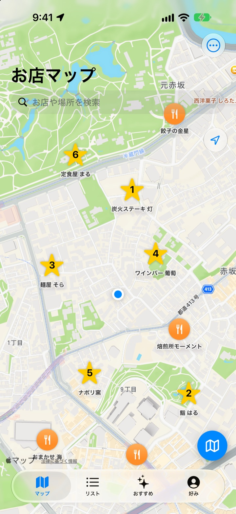
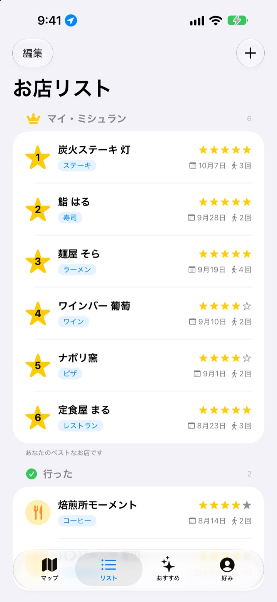
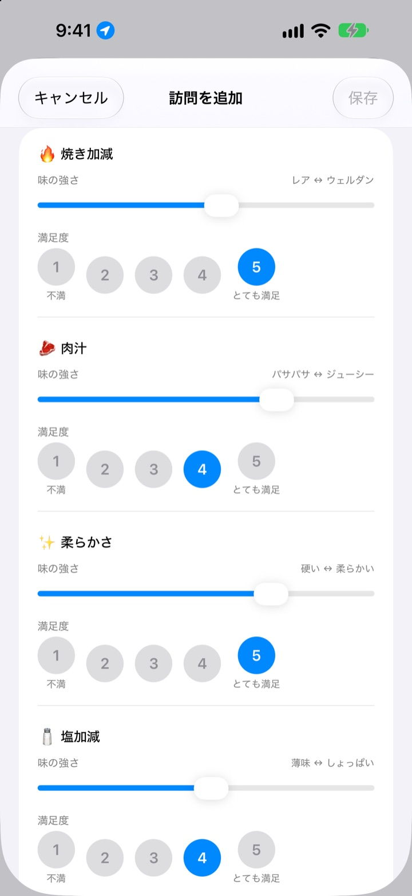
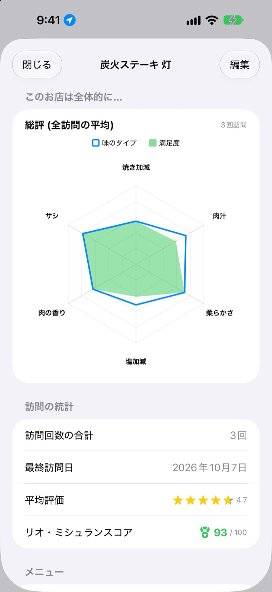

あのおいしいお店、
もう忘れない
行ったお店と行きたいお店を地図に集め、訪れるたびに食べたメニュー、写真、味の評価を残します。次にどこへ行くか迷ったら、自分の記録が答えてくれます。
すべての機能が無料です。会員登録は不要で、記録はiPhoneの中だけに残ります。

ひと皿評価してみる
料理の種類を選んで、味の強さと満足度をつけてみてください。アプリの訪問記録と同じ項目、同じ計算です。
あの店、何がおいしかったっけ？
確かに気に入ったお店なのに名前がうろ覚えで、何を頼んだか、スープがしょっぱかったかはもっと思い出せない。結局また検索して他人の口コミを読むことになります。人生グルメは自分で味わった記録を地図に残し、次のお店選びを自分の経験で決められるようにします。
行った・行きたい、そしてマイ・ミシュラン
地図で検索するか、近くの場所をタップしてすぐ保存。行ったお店といつか行きたいお店を分けておき、いちばん大切な6軒には1位から6位まで順位をつけてまとめます。
おすすめを聞かれたら、このリストを見せるだけです。

料理に合わせた項目で評価
辛さや塩加減のような味の強さはスライダーで、その味がどれだけ好みだったかは1から5で別々につけます。ステーキなら焼き加減と肉汁、寿司ならシャリとネタ、ラーメンならスープと麺と、料理ごとに項目が変わります。
訪問記録にはメニュー、写真、星の評価、メモも一緒に残ります。

また行きたいお店が数字でわかる
訪問が重なると、お店の画面に全訪問の平均で描いた総評が表示され、星の評価と満足度を合わせたリオ・ミシュランスコアが100点満点でつきます。
保存したお店で過ごして店を出ると、少しあとに記録を促す通知が届くので書き忘れません。

始め方は3ステップ
- 1
お店を保存する
地図で検索するか、近くの場所をタップしてリストに入れます。
- 2
行ったら記録する
メニュー、写真、星、味の評価を残します。味の評価は任意です。
- 3
次のお店を選ぶ
トップ6とスコアを見て、Appleマップ、カカオマップ、NAVERマップで道案内。
料理ごとに変わる評価項目
- 🍽️ 一般
- 辛さ、濃さ、甘さ、塩気、脂っこさ、素材の味
- 🥩 ステーキ
- 焼き加減、肉汁、柔らかさ、塩加減、肉の香り、サシ
- 🍣 寿司
- シャリ、ネタ、わさび、バランス、握り、温度
- 🍜 ラーメン
- スープ、麺、チャーシュー、トッピング、温度、バランス
- 🍕 ピザ
- 生地、ソース、チーズ、焼き加減、トッピング、バランス
- 🍷 ワイン
- ボディ、タンニン、酸味、アロマ、余韻、バランス
- ☕ コーヒー
- 酸味、ボディ、香味、後味、甘さ、バランス
それ以外の料理は1行目の一般の項目で評価します。料理の分類は自分で作ることもできます。
よくある質問
お店はどうやって追加しますか?
地図上部の検索欄にお店の名前を入力し、検索結果で「マイお店リストに追加」をタップしてください。 地図に表示されている周辺のスポットをタップして、そのまま追加することもできます。 検索に出てこないお店は、現在地や地図上で選んだ場所に直接追加できます。
「行った」「行きたい」「Top 6」とは何ですか?
行った：すでに行ったことのあるお店です。訪問記録を残せます。 行きたい：いつか行ってみたいお店です。行ってきたら、お店の詳細画面で「行った」に切り替えてください。 Top 6(マイ・ミシュラン)：いちばん大切なお店6軒に1位から6位まで順位をつけます。「行きたい」のお店はTop 6に選べません。
味の評価は必ずしないといけませんか?
いいえ、任意です。評価しておくと、お店の画面の総評チャートに味のタイプと満足度が重なり、リオ・ミシュランスコアにも反映されます。
「今日の訪問はいかがでしたか?」のお知らせはいつ届きますか?
保存したお店の近くに5分以上滞在してから離れると、約40分後にお知らせが届きます。この機能を使うには、位置情報の「常に」とお知らせ(通知)の許可が必要です。 お知らせが不要な場合は、設定 > アプリ > 人生グルメ で通知をオフにするか、位置情報を「このAppの使用中のみ許可」に変更してください。 位置の確認は端末の中だけで行われ、移動経路を保存したり外部に送信したりすることはありません。
位置情報を許可しないと使えませんか?
使えます。地図上で場所を選んでお店を追加し、記録することができます。使えなくなるのは、現在地の表示と訪問後のお知らせだけです。
スポット検索の結果が出てきません
スポット検索にはインターネット接続が必要です。 別の名前や短いキーワードでもう一度検索してみてください。 それでも見つからない場合は、地図上で場所を選んで直接追加できます。
記録はどこに保存されますか? ほかの端末と同期されますか?
お店、訪問記録、写真はすべてこのiPhoneの中だけに保存されます。現在のバージョンはほかの端末との同期に対応しておらず、設定にあるiCloudバックアップ・復元もまだ動作しません。iPhone全体のバックアップ(iCloudバックアップまたはコンピュータへのバックアップ)にはアプリのデータも含まれます。
記録をすべて消したいです
地図画面の設定で「すべてのデータを削除」をタップすると、お店と訪問記録が削除されます。元に戻せないのでご注意ください。写真まで完全に消すには、アプリを削除してください。
アプリを削除して入れ直したら、記録は残っていますか?
いいえ。記録は端末の中だけに保存されているため、アプリを削除すると一緒に消えてしまいます。アプリを削除する前に必ずご確認ください。
本当にすべて無料ですか？
はい、すべての機能が無料です。広告もアカウント登録もありません。設定の「開発者を応援する」はお好みで、しても機能は変わりません。
上記で解決しない場合は、アプリの 設定 > サポート から直接送っていただくか、mizzking75@gmail.com までメールでお問い合わせください。 アプリのバージョン、iPhoneの機種、どの画面で何をしたかを書いていただけると、より早く確認できます。